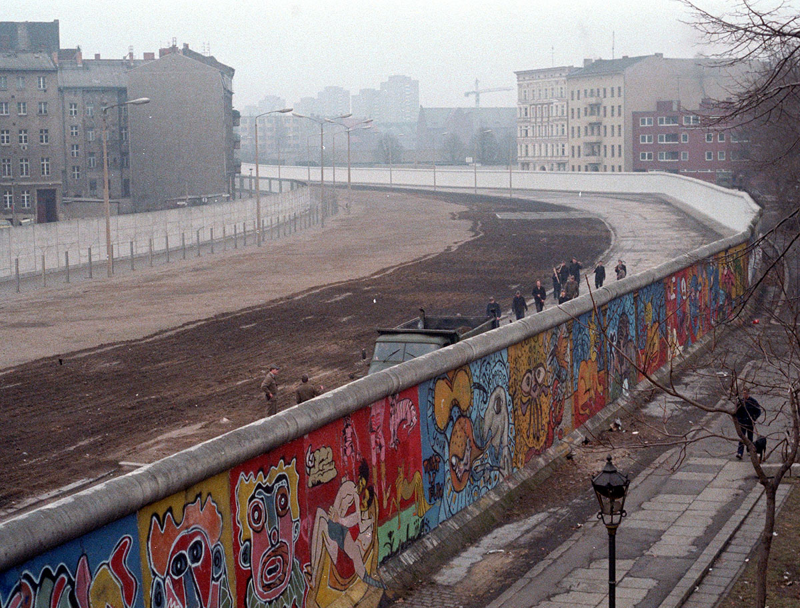
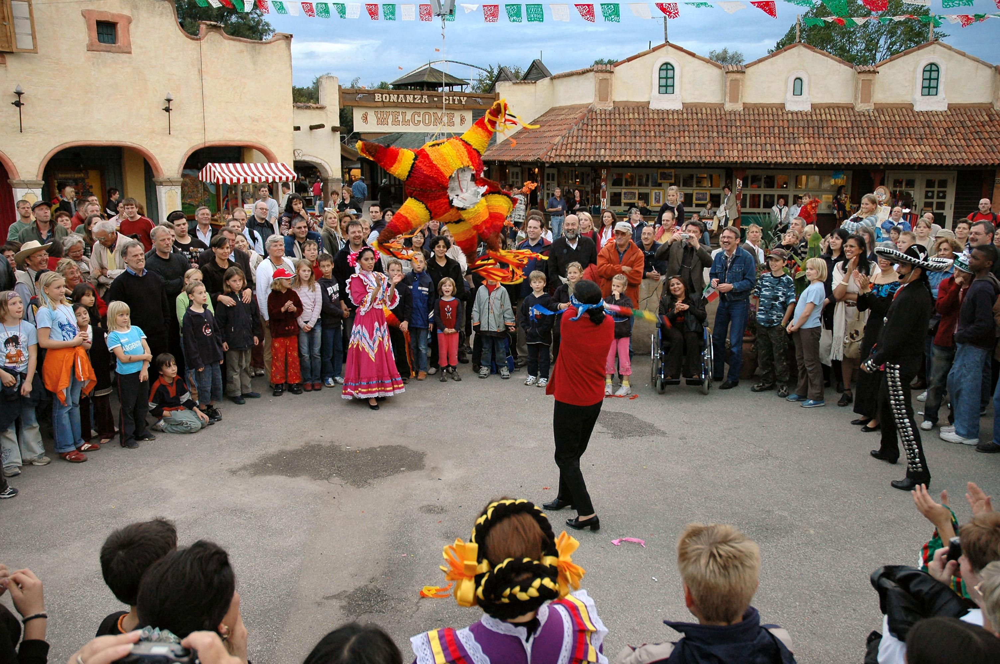
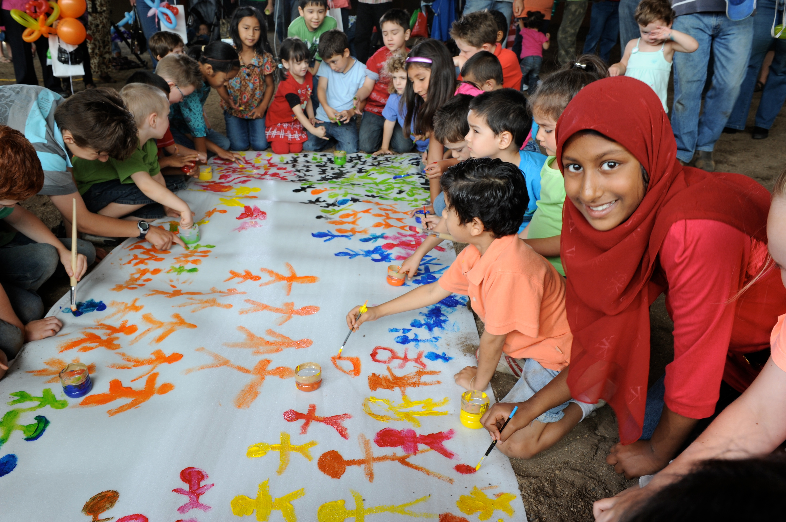

Fronteras fluidas: un ensayo visual
Tema: Teniendo en cuenta el tema del capítulo VI, Fronteras fluidas, ¿qué piensas tú sobre un mundo sin fronteras? Crea un mural o un texto cultural creativo que refleje tu perspectiva a esta pregunta.
Artista: Alysa Meng
"¿Qué semejanzas hay entre estos emojis y otros códigos como HTML, Python u otras lenguas?"
Para responder a esta pregunta planteada el primer día de clase (con un toque de humor): Los demás utilizan los emojis para transmitir emociones. Alysa utiliza HTML (esta página se compone de 300 líneas de HTML, CSS y unas fotos de Wikipedia CC).
En el siglo XXI, vivimos en un mundo cada vez más digital. Este mundo digital no tiene fronteras para mí, una programadora con acceso y competencia tecnológica, y por lo tanto es tan relevante este medio en el que hago esta tarea. Todo esto es bastante poético y autoreferencial.
Un mundo con fronteras...
📷
... organiza a la gente.
Las fronteras son una estructura de organización que intentan definir con claridad las líneas entre dos comunidades. Son esenciales desde una perspectiva política para establecer el alcance de la ley y mantener la paz internacional.
📷
... protege a la gente.
A veces las fronteras, no solo los límites físicos sino también las normas culturales, se crean para proteger ciertas comunidades. Definen la identidad de una región o grupo cultural dentro de una región.

📷
... divide a la gente.
Crear una barrera puede causar problemas graves para los que viven cerca de ella. Hay conflictos de identidad cultural, una zona gris en la política, y una noción de la otredad.
Un mundo con fronteras fluidas...
📷
... reconoce una identidad entre dos culturas.
"I will no longer be made to feel ashamed of existing. I will have my voice. Indian, Spanish, white. I will have my serpent's tongue--my woman's voice, my sexual voice, my poet's voice."
- Gloria Anzaldúa
📷
... establece un espacio de transición.
Las fronteras lingüísticas son un desafío, y el idioma cambia debido a las necesidades dinámicas de la gente. Las lenguas mezcladas, como el español chicano, ejemplifican la adaptación de la cultura fuera de la patria.

📷
... puede ser complicado.
La existencia de fronteras se base en la estructura sociopolítica y los valores culturales. La diversidad cultural dentro de una comunidad internacional es increíble y gracias a esta diáspora, puede ser difícil crear un puente cuando esos valores contradicen. Lo que se puede hacer es reconocer la causa de esas diferencias.
Un mundo sin fronteras...

📷
... es una sociedad inclusiva.
La ausencia de fronteras se relaciona con la habilidad de cada persona de definir quién es sí mismo para la comunidad que lo rodea.
📷
... tiene movimiento para todos.
La falta de fronteras facilita la libertad social de las personas. Extiende la capacidad de intercambios culturas que promova conocimiento global.
📷
... no es posible.
Debido a la naturaleza humana, es difícil sostener una sociedad sin fronteras. Galeano discute la historia de perder y ganar entre Latinoamérica en el contexto del postcolonialismo. Las fronteras, por razones semejantes, surgen como parte de la evolución del mundo físico y humano.
Recorriendo las diferentes circunstancias, lo mejor sería luchar por un mundo lleno de los tres escenarios donde las fronteras existen para establecer la orden necesaria para que crezca una sociedad inteligente y no hay fronteras en la discusión de los derechos humanos. Considero igualmente importante tener fronteras fluidas para fomentar la comunicación entre dos partes. Se realizan esas fronteras de varias maneras, como ejemplos, los avances tecnológicos que conecta a la gente y el reconocimiento de los individuos que tienen una identidad compuesta de dos o más comunidades.


{kind=link}
{kind=link}
{kind=link}
{kind=link}
.jpg){kind=link}
{kind=link}
#/media/File:Harmony_Day_(5475651018).jpg){kind=link}
.jpg){kind=link}
_-_Google_Art_Project_-_edited.jpg){kind=link}